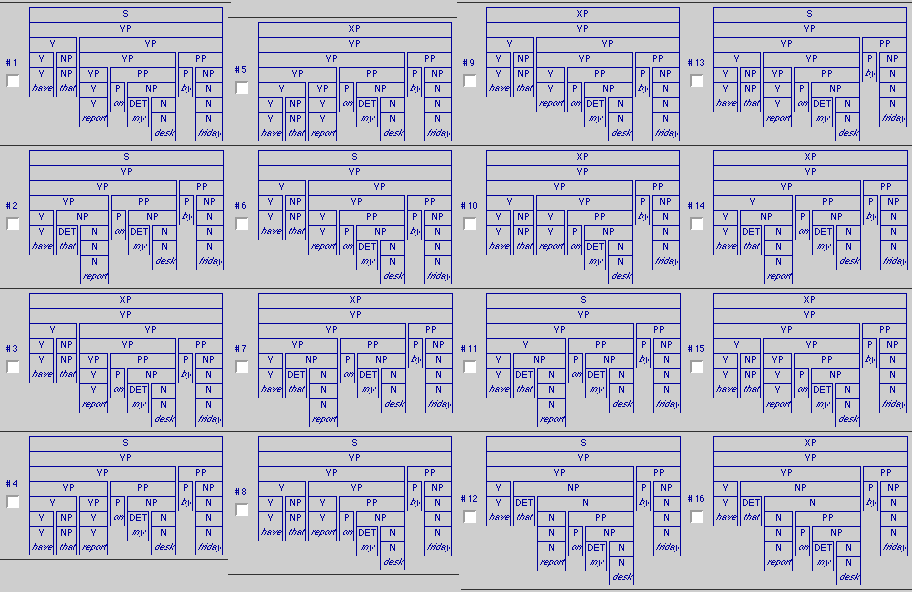
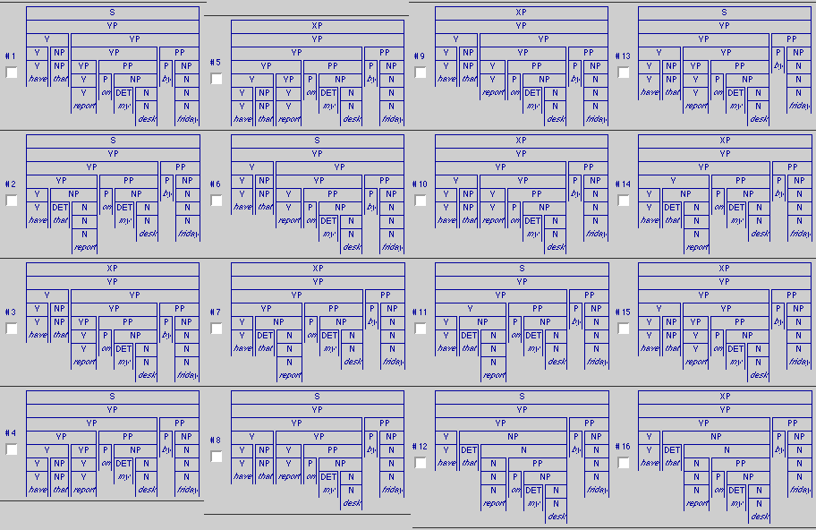

Introduction


An Experiment in Human Disambiguation
Jonathan Pool

Computational Linguistics Lab
9 April 2007
Presentation of:
Paraphrasal and Truth-Conditional
Disambiguation of Quantification:
Which Works Better?
|
Introduction
|
An Experiment in Human DisambiguationJonathan Pool Computational Linguistics Lab
|